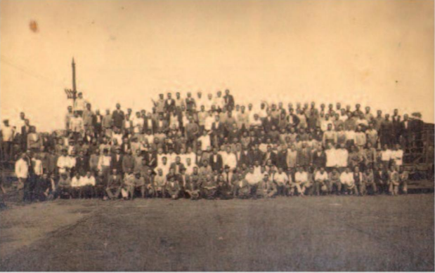
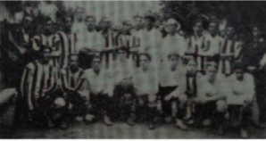

En 1912, los antiguos espectadores de “la cancha de los ingleses” ya tienen alrededor de 18 años. Algunos ya empleados del Ferrocarril Central Córdoba.
Debaten en charlas para la conformación de un club. Las primeras reuniones informales se dieron en la tornería del Ferrocarril, a cargo de obreros de la empresa. Finalmente decidieron convocar a una reunión general. En el hogar de Ángel Salvatelli.
Se juntaron los gestores de la entidad con la idea de constituir un cuadro poderoso. La fundación del Club Atlético Talleres Central Córdoba tuvo lugar el 4 de octubre de 1913. Por conflictos con la Liga Cordobesa, el club cambió su fecha de fundación a la del 12 del mismo mes para poder reintegrarse a la Liga luego de ser desafiliado en 1917. Presidente, Tomás Lawson; Secretario, Arturo Molina; Tesorero, Chulz, Vicepresidente, J. Sobreiro; Prosecretario, Britton; Protesorero, T. Ferreyra; Vocales B. Fernández, Mandolina, Kalis, J. Nicola y Camurri.
Lawson era inglés de nacimiento y en su país había jugado en el Accrengton Stanley y en el Blackpool. Fue uno de los tantos británicos que llegó a Córdoba en 1909 para desempeñar un cargo técnico en el Ferrocarril Central Córdoba. En el campo de juego era un aguerrido centre half (lo que hoy sería un “5”) y se alistó en el Córdoba Athletic por dos años, hasta que una desavenencia con el secretario lo hizo abandonar el club. Fuera del terreno, su personalidad de líder lo hizo encabezar la nueva institución, que finalizó con todas las formalidades de rigor el domingo 12 de octubre de 1913.
El 12 de Marzo de 1915 las autoridades de la Federación Cordobesa recibieron una nota la cual informaba que la camiseta para la temporada que estaba por comenzar seria Azul y Blanca “El equipo de la violeta y blanco se presentó con el nuevo uniforme que usara en la temporada (Azul obscuro y Blanco) el que da buen golpe de vista”, se dijo en los diarios.
El 28 de Marzo de 1915 aparece la primera foto del equipo con la camiseta Azul y Blanca, esta foto fue en un partido amistoso contra Juniors.
Se comenzaba a transitar la segunda campaña provincial del club con unas cuantas novedades: la camiseta a bastones Azules y Blancos y una cancha mas a tono con la exigencia deportiva de la época, ya que hasta el momento siempre habían jugado en canchas de sus rivales y tenían el patio de la casa de los Salvatelli para los enfrentamientos informales o de práctica. Después se acentuaron como equipo y consiguieron una manzana donde después de emparejar todo el terreno, poner los arcos y marcar con cal las líneas, se terminaría construyendo un inmueble lo cual hizo que nunca puedan jugar ahí.
Finalmente, Antonio Hugues, el pagador de la empresa cedió a préstamo un espacio en la calle Roma y Catamarca donde Central Córdoba hizo ya por fin, de local, aunque nunca pudo disputar un encuentro oficial antes de que se vendiera el lote.
La rivalidad entre Central Córdoba y Belgrano empezaba a transformarse en el clásico mas importante de la provincia, la bronca se empezó a gestar cuando empataron 1-1 en lo que fue el ultimo partido en la historia que se jugo en la cancha ubicada atrás de los talleres del ferrocarril, al final de la línea del tranvía numero 5. El 25 de noviembre de 1917 se convocaron alrededor de dos mil personas para verlos jugar en Alberdi (una cantidad impensada para la época).
Al fin de semana siguiente al de la disputa del clásico, la selección de la Liga tenia que jugar un par de partidos amistosos contra su par de la Asociación Argentina, para los cuales habían convocado a cinco jugadores de Central Córdoba: Félix Rossetti, Eduardo Ponce, Santiago Bolognino, Juan Prax y Ernesto Pieri.
El viernes 7 de diciembre, un día antes del primer partido. La Liga Cordobesa recibió una nota del club en la que le comunicaban que no iban a ceder a los jugadores, esto fue tomado de mala manera por la liga. Optaron por expulsar de su seno a la C.D del club Central Córdoba y Retirar la afiliación al mencionado club desde la fecha y por toda la temporada deportiva del año 1918, además de la descalificación definitiva del jugador Horacio Salvatelli y por un año al directivo Luis Salvatelli.
El club que en cinco años había conseguido cinco títulos (dos oficiales anuales y tres copas) que reunía prácticamente la misma cantidad de socios que sus rivales más viejos (contaba con 150 asociados en solo cuatro años de existencia) era inevitable que Central Córdoba haga todo lo posible para volver, pero había diversos aspectos legales ineludibles: Central Córdoba no seria admitido con el mismo nombre y la única manera de poder volver era cambiando el nombre y la fecha de fundación.
Así, finalmente, se fundó el Club Atlético Talleres, el 12 de octubre de 1913.